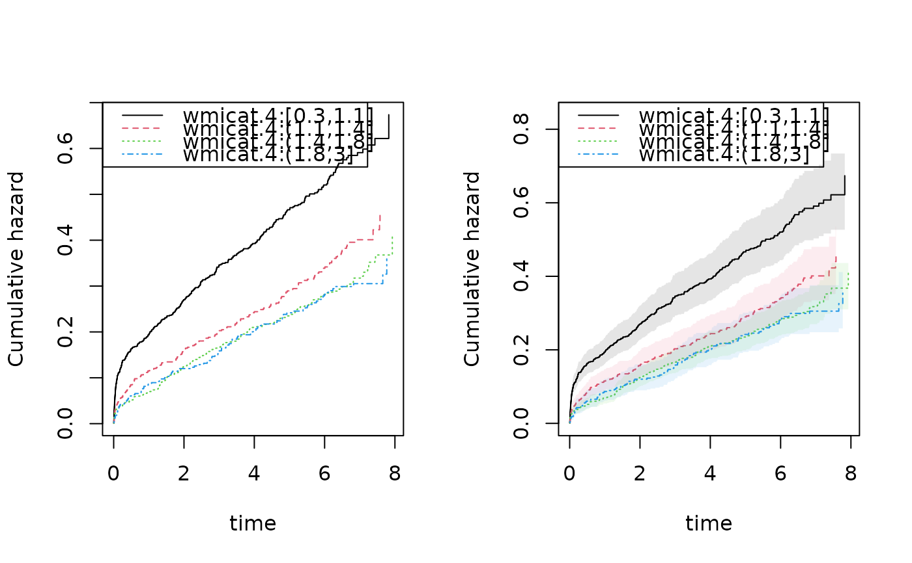

Fast Cox PH regression Robust variance is default variance with the summary.
Details
influence functions (iid) will follow numerical order of given cluster variable so ordering after $id will give iid in order of data-set.
Examples
library(mets)
data(TRACE)
dcut(TRACE) <- ~.
out1 <- phreg(Surv(time,status==9)~wmi+age+strata(vf,chf)+cluster(id),data=TRACE)
summary(out1)
#>
#> n events
#> 1878 958
#> coeffients:
#> Estimate S.E. dU^-1/2 P-value
#> wmi -0.8470690 0.0871082 0.0864370 0
#> age 0.0563491 0.0037111 0.0036386 0
#>
#> exp(coeffients):
#> Estimate 2.5% 97.5%
#> wmi 0.42867 0.36139 0.5085
#> age 1.05797 1.05030 1.0657
#>
par(mfrow=c(1,2))
plot(out1)
## computing robust variance for baseline
rob1 <- robust.phreg(out1)
plot(rob1,se=TRUE,robust=TRUE)

## iid decomposition, with scaled influence functions
## for regression parameters
head(iid(out1))
#> wmi age
#> 3 2.315573e-04 8.113514e-05
#> 7 -1.175364e-03 -2.901628e-05
#> 13 1.826339e-03 1.670430e-04
#> 15 -3.739823e-05 2.673793e-05
#> 17 -2.997039e-03 5.371497e-05
#> 22 -9.146118e-04 -9.342247e-06
## making iid decomposition of baseline at a specific time-point
Aiiid <- iid(out1,time=30)
head(Aiiid)
#> strata0 strata1 strata2 strata3
#> 3 -1.894877e-04 -4.120570e-04 -2.659857e-04 -7.350908e-04
#> 7 1.812767e-04 2.367745e-04 1.678711e-04 8.774722e-04
#> 13 -6.837818e-04 -1.063129e-03 -6.374803e-04 -1.717426e-03
#> 15 -8.543458e-05 -9.149095e-05 -8.008394e-05 -2.250601e-04
#> 17 4.118052e-05 3.243790e-05 3.366936e-05 -1.046447e-05
#> 22 5.011669e-05 1.201129e-04 8.975026e-05 2.188617e-04
## both iid decompositions
dd <- iidBaseline(out1,time=30)
head(dd$beta.iid)
#> [,1] [,2]
#> 3 2.315573e-04 8.113514e-05
#> 7 -1.175364e-03 -2.901628e-05
#> 13 1.826339e-03 1.670430e-04
#> 15 -3.739823e-05 2.673793e-05
#> 17 -2.997039e-03 5.371497e-05
#> 22 -9.146118e-04 -9.342247e-06
head(dd$base.iid)
#> strata0 strata1 strata2 strata3
#> 3 -1.894877e-04 -4.120570e-04 -2.659857e-04 -7.350908e-04
#> 7 1.812767e-04 2.367745e-04 1.678711e-04 8.774722e-04
#> 13 -6.837818e-04 -1.063129e-03 -6.374803e-04 -1.717426e-03
#> 15 -8.543458e-05 -9.149095e-05 -8.008394e-05 -2.250601e-04
#> 17 4.118052e-05 3.243790e-05 3.366936e-05 -1.046447e-05
#> 22 5.011669e-05 1.201129e-04 8.975026e-05 2.188617e-04
outs <- phreg(Surv(time,status==9)~strata(vf,wmicat.4)+cluster(id),data=TRACE)
summary(outs)
#>
#> n events
#> 1878 958
#>
par(mfrow=c(1,2))
plot(outs)